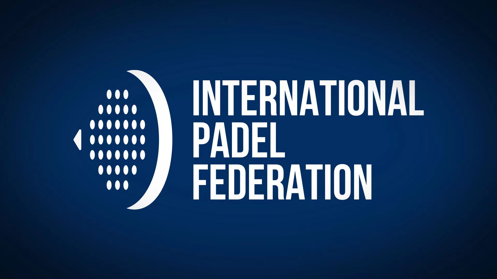
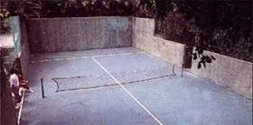
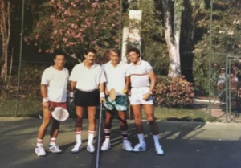
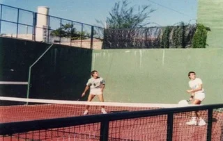
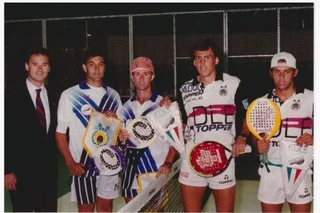
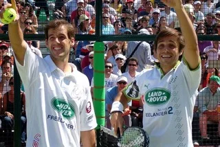
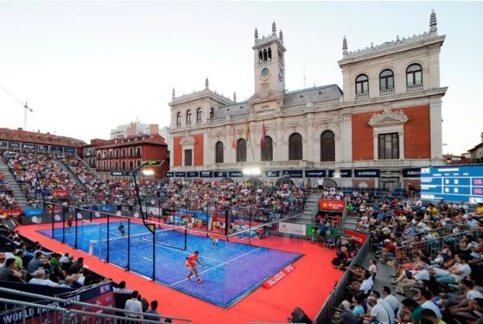
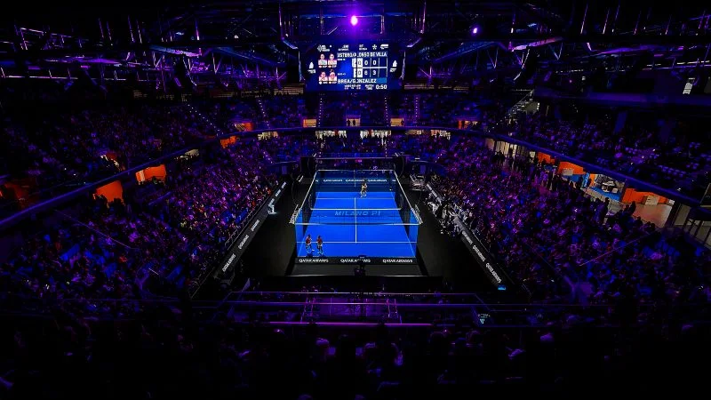

FEDERACION INTERNACIONAL DE PADEL

ACERCA DE LA FEDERACION INTERNACCIONAL DE PADEL (FIP)
La Federación Internacional de Pádel (FIP) es el organismo rector mundial del Pádel. Su misión es fomentar el crecimiento y el desarrollo del deporte en todos los niveles y edades, desde la base hasta el ámbito profesional; regular el Pádel a través de la afiliación de Federaciones Nacionales miembros y asociaciones regionales; y promover la inclusión del Pádel en los Juegos Olímpicos, el mayor honor para cualquier deporte. Actualmente, la FIP cuenta con 100 Federaciones Nacionales afiliadas en los cinco continentes. La Federación establece las reglas oficiales del deporte y gestiona los rankings internacionales oficiales.
La FIP también gobierna y coordina el calendario internacional de competiciones, incluyendo circuitos profesionales de élite como Premier Padel, Hexagon World Series y el CUPRA FIP Tour; circuitos dedicados a jugadores jóvenes (FIP Promises) y jugadores amateurs (FIP Beyond); así como competiciones continentales y mundiales por equipos, incluida la Copa del Mundo. Además, la FIP es el proveedor oficial de formación para entrenadores y árbitros a través de FIP Academy, una plataforma de formación dedicada que ofrece cursos y certificaciones oficiales.
HISTORIA

Años 60 – Orígenes
En 1969, el pádel fue inventado en Las Brisas, en una casa propiedad de Enrique Corcuera, en Acapulco. Aficionado al tenis, Corcuera no disponía del espacio suficiente para construir una pista de tenis de tamaño reglamentario en el patio de su casa. En su lugar, creó una pista más pequeña, de 20 × 10 metros, cerrada por muros de 3 metros de altura y con una red de tenis en el centro. Así nació la primera pista de pádel de la historia. El primer reglamento fue redactado por su esposa, Viviana Corcuera, ex Miss Argentina, quien se lo regaló como obsequio de cumpleaños.
Años 70 – Llegada a España y Argentina
El pádel llegó a España a comienzos de la década de 1970 de la mano del príncipe Alfonso de Hohenlohe, quien pasaba sus vacaciones de verano en la casa de Corcuera en Acapulco y posteriormente construyó pistas de pádel en el Marbella Club Hotel, en Andalucía. En esa misma época, Julio Menditeguy, argentino y miembro del club de tenis Alfonso en Marbella, llevó el deporte a Argentina. Las primeras pistas en Argentina se construyeron en el Club Tortugas, el Mar del Plata Ocean Club y en otras ciudades del país.


Años 80 – Expansión internacional
Durante la década de 1980, el pádel se expandió a nuevos países, entre ellos Brasil, Uruguay, Chile, Francia, Estados Unidos y Canadá. En 1988 se fundó la primera asociación nacional del mundo, la Asociación Pádel Argentino. Ese mismo año, en el mes de enero, se disputó en Mar del Plata el primer enfrentamiento internacional entre España y Argentina. En 1989 se produjo una innovación clave de la mano del entrenador Jorge Galeotti, de Mar del Plata: el Crystal Palace, la primera pista de cristal desmontable y transportable, que resultó decisiva para la expansión internacional del deporte.
Años 90 – Institucionalización y unificación de las reglas
El 12 de julio de 1991 se fundó en Madrid la Federación Internacional de Pádel (FIP), creada por las asociaciones de pádel de Argentina, España y Uruguay. La FIP instauró el Campeonato del Mundo de Pádel como una competición bienal, cuya primera edición se celebró en 1992 en España, con sedes en Madrid y Sevilla. Durante esta década, las reglas del juego variaban según el país. En 1997, España y Argentina alcanzaron un acuerdo en Barcelona para unificar el reglamento y estandarizar oficialmente la denominación “pádel” (anteriormente “paddle” en Argentina). A finales de los años noventa, ya se habían constituido 11 federaciones nacionales de pádel, incluidas cinco en Europa y seis en el continente americano.


Años 2000 – Desarrollo juvenil y profesionalización
En el año 2000 se celebró en La Plata, Argentina, el primer Campeonato del Mundo Junior. Inicialmente concebido como un evento anual, pasó a disputarse de forma bienal a partir de 2003. Durante este periodo se crearon siete nuevas federaciones, seis de ellas en Europa, además de la federación australiana. En 2005 se puso en marcha el primer circuito profesional internacional, el Padel Pro Tour (PPT), impulsado por organizadores privados y activo durante ocho temporadas.
Años 2010 – Crecimiento global y nuevos circuitos
A lo largo de la década de 2010 se crearon nuevas federaciones nacionales en todo el mundo y, al final del periodo, más de 40 estaban afiliadas a la Federación Internacional de Pádel (FIP). En 2013, el PPT fue sustituido por el World Padel Tour (2013–2023). En 2018 se celebró en Estepona y Benahavís (Málaga, España) el primer Campeonato del Mundo Sénior. En 2019, la FIP lanzó su circuito internacional, rebautizado como CUPRA FIP Tour en 2020, con el objetivo de respaldar el crecimiento continuo del pádel a nivel global.


Años 2020 – Consolidación y gobernanza global
En 2021, la Federación Internacional de Pádel (FIP) lanzó FIP Promises, un circuito juvenil para chicos y chicas en las categorías Sub-14, Sub-16 y Sub-18. En 2025 se incorporó la categoría Sub-12. En 2023 se alcanzó el hito de 70 federaciones afiliadas y más de 160 torneos internacionales celebrados en todo el mundo. Creado en 2022, Premier Padel se convirtió en el circuito profesional global oficial, regido por la FIP y respaldado por Qatar Sports Investments (QSI). En 2024, el circuito contó con 24 torneos en 16 países.
+150
PAÍSES
100
FEDERACIONES NACIONALES
+35.000.000
JUGADORES ACTIVOS
+850.000
JUGADORES FEDERADOS